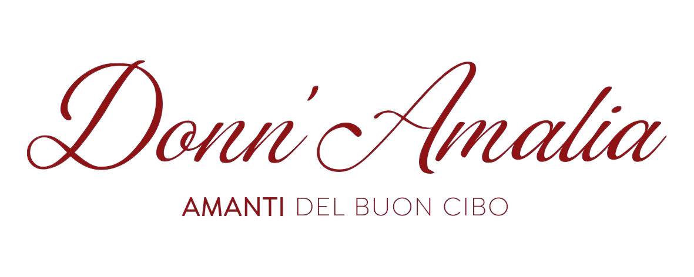
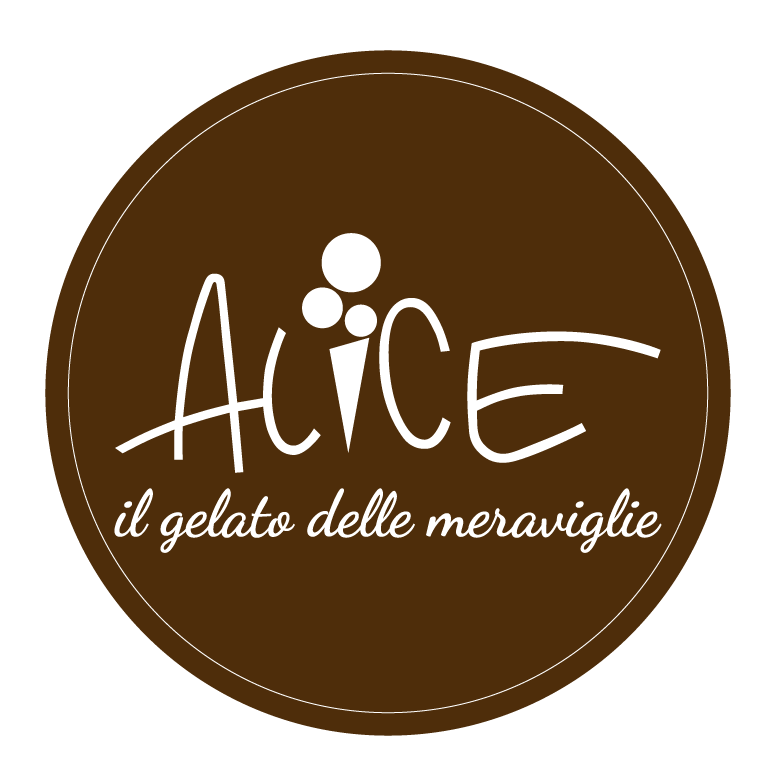
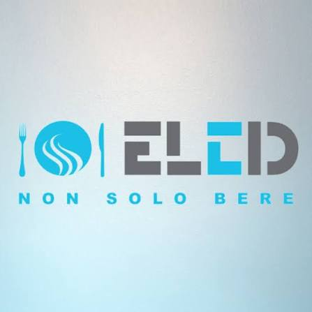
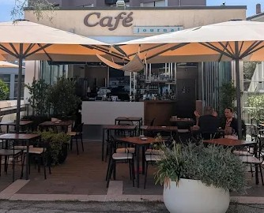
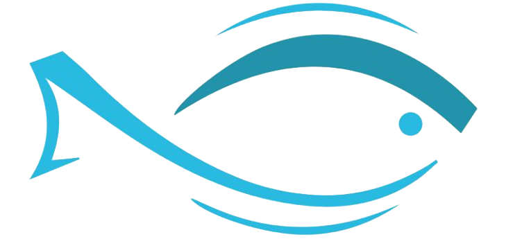
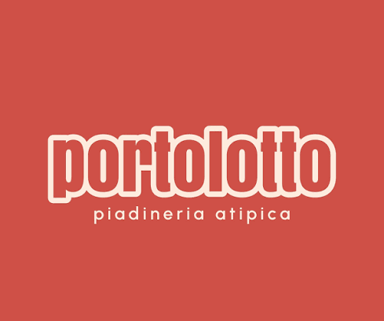

Scopri Pesaro
Luoghi da vedere, musei, cultura, spiagge, eventi e idee per vivere la città.
Vai a Visit Pesaro →Mare · città · natura
Tra una gara e l’altra, scopri la città, il lungomare e il Parco Naturale del Monte San Bartolo attraverso le risorse ufficiali del territorio.
Scopri il territorio
Qui trovi i collegamenti più utili per organizzare il tempo libero durante il weekend dei Campionati.
Luoghi da vedere, musei, cultura, spiagge, eventi e idee per vivere la città.
Vai a Visit Pesaro →Sentieri, percorsi e informazioni per scoprire il Parco Naturale che domina il litorale pesarese.
Scopri i sentieri →Dove mangiare e bere
Una selezione di locali per mangiare e bere durante il weekend dei Campionati. Seleziona una o più categorie oppure visualizza le sedi sulla mappa.

DATradizione marchigiana e napoletana, pesce fresco e pizza a lievitazione naturale.

ALICEGelato artigianale a km zero, colazioni, brunch, aperitivi e cocktail.

El CidCaffetteria e cocktail bar sul lungomare, con aperitivi, cucina e musica dal vivo.

JournalPesce fresco, cocktail d’autore e aperitivi vista mare davanti alla Palla di Pomodoro.

GDBCucina di pesce sul lungomare, con proposte di carne e pizza.

PortolottoPiadineria nel porto di Pesaro, a pochi passi dalla sede della Canottieri.

BOTANICColazione, pranzo, cena, aperitivi e cocktail in un salotto green dal design ricercato.
Tocca un indicatore sulla mappa per aprire il dettaglio del locale.
Caricamento della mappa…
Nessun locale corrisponde ai filtri selezionati.
Il nome del locale apre il relativo sito o profilo web. Ogni indirizzo apre la posizione corrispondente su Google Maps.